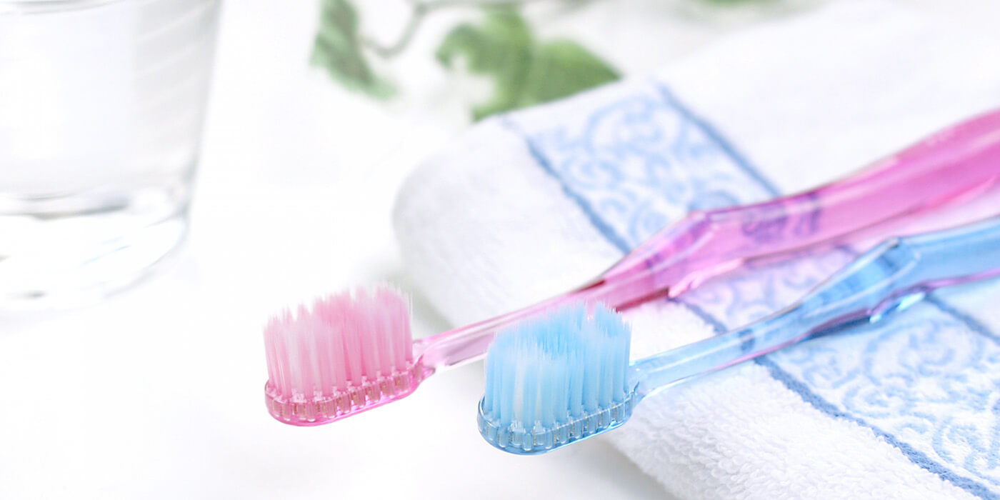

予防歯科PREVENT

削る量を少なくし、神経を残してあげることが結果として歯の生存率を上げることがわかっています。歯が残っていれば、しっかり噛んで、いつまでも美味しい食事を取り、心身ともに健康でいられるのです。
メディケア歯科クリニック下妻は、悪いところを治す治療ではなく、病気にならない体つくりのため予防を通じて毎日の健康をサポートいたします。
当院の予防歯科
歯石取りや虫歯の治療をしても、治療をしてすぐにまた汚れが貯まったり虫歯になってしまっては、あまり意味がないので、かならず予防処置の前と後で歯周検査を行うようにしています。
予防処置の前で現時点での汚れ、出血、歯石の付き具合、またブラッシングのクセなどをブラッシュアップした上で、歯石取り、クリーニング、フッ素塗布、ブラッシング指導を行い再度、歯周検査を行います。
その際に改善された点、されてない点を確認、患者様にフィードバックして予防処置をやる前より綺麗になるのは勿論のこと、良い状態をなるべく維持していけるようなモチベーションにしていくことも当院の予防処置の考え方であります。
虫歯は予防できる
虫歯が成立する条件は、
- 歯がある
- 虫歯菌が口の中にいる
- 虫歯菌が生きていくための餌があること
- 時間が経過すること
以上4つとなります。
対策としては、フッ素を塗布したり、最近の数を減らす努力をすることです。日々の正確なブラッシングで菌を減らすことができます。
予防歯科をオススメする方
特別な理由がない限り、歯医者に滅多に行かない方も多いかと思いますが、我々は人間である以上、日々老化していきますし、歯ぐきも例外ではありません。ですので、現状維持でいっているつもりでも口腔内は時間の経過と共に老化していきます。
「現状維持で」と考えている方にこそ、予防処置はおすすめしますし現状維持と思いながら老化していくより、現状維持と思いながら口腔内の状況が向上していった方が健康の面でも精神的な面でも良いと考えております。
よくある質問
歯石・バイオフィルムとはなんですか？
物理的、機械的にしか除去のできない菌の塊だと考えていただいて良いと思います。なので薬などで溶かすことはできないため、ブラッシング、専門家による歯石取りでしか取り除くことはできません。
歯茎（歯周ポケット）の検査について知りたい！
歯と歯ぐきの関係において理想としては、全く隙間なくくっついているのが理想とされています。
しかし、日常生活を送る上でなかなかそういうわけにもいかないので歯と歯ぐきの間には上述した歯石・バイオフィルムなどが貼りついてしまい、どうしても、隙間、ポケットが発生してしまいます。
ポケットが深くなると、更に歯石は深いところについてしまいます。歯石は菌の塊であり、その菌は歯を支えている骨を溶かす毒素を出します。深い所で骨を溶かす毒素を出されてしまうと骨は痩せてしまい、歯が揺れ始めます。
そうならないために、我々は歯周検査を行いポケットの深さ、歯の揺れ、出血、汚れの程度を確認した上で歯周治療や患者様へのフィードバックを行っております。
クリーニング（スケーリング）について知りたい！
超音波の器具を使い歯と歯ぐき周辺にこびりついている歯石を物理的に除去します。さらに歯の表面を清掃、研磨行います。
クリーニングのメリットは？
歯周病の原因である歯石、虫歯の原因である食べカスを除去するだけでなく歯の表面のツルツルにすることにより、そもそもの汚れが付着しにくいように仕上げることができます。
どのくらいの頻度でクリーニングを受ければいいの？
ブラッシング指導を徹底的に受けた前提で３ヶ月に１回が良いと考えております。
良い状態の維持ができていれば、それに越したことはありませんしあらたな歯石が着いていたとしても、ポケットの深いところに着いてしまう前に除去できれば、ポケットの深さも浅いままで維持できますし新しい虫歯ができたとしても、虫歯になりかけの小さい状態で治療行うことができれば削る範囲も少なく済むと考えます。
まずはご相談ください
私達は患者様からお口の健康を任せていただけるように、頼りがいのある歯科医院を目指しています。お口のトラブルがございましたら、お気軽にご相談ください。